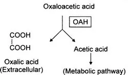
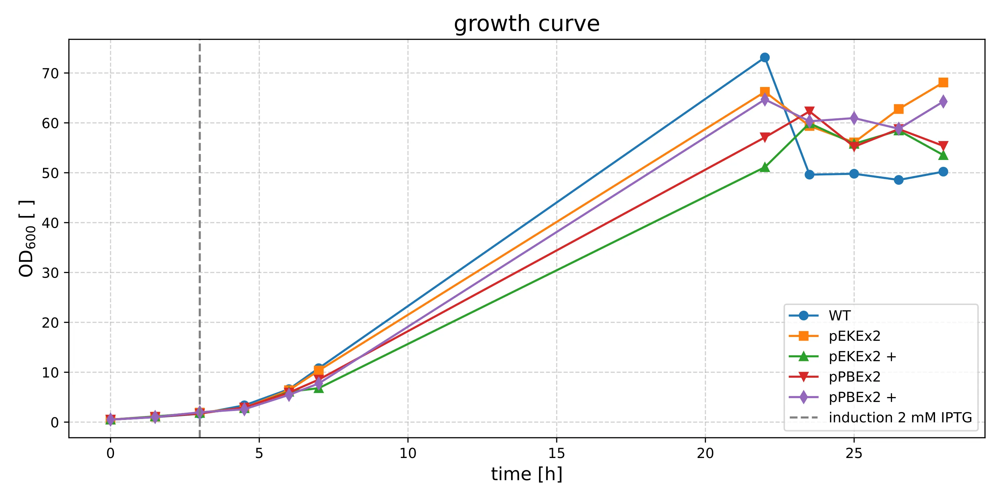
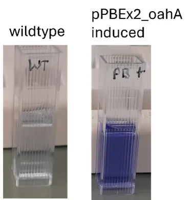
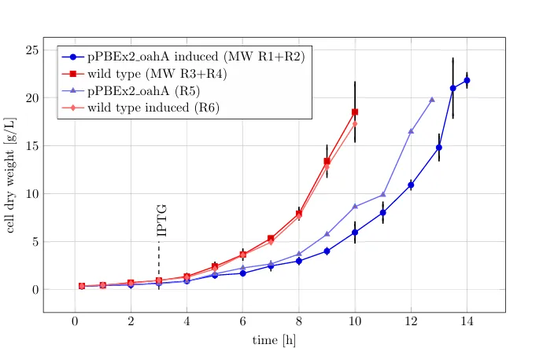
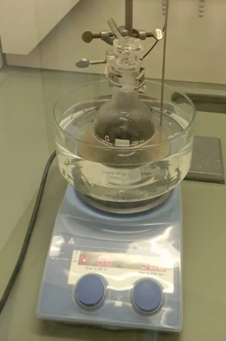
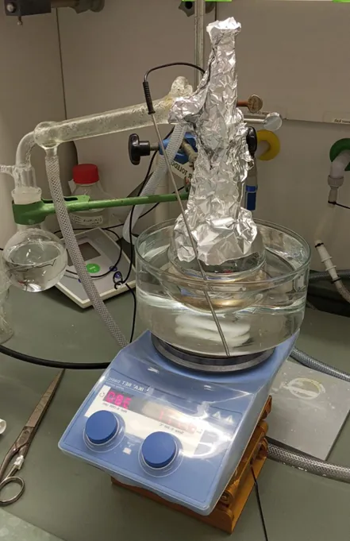
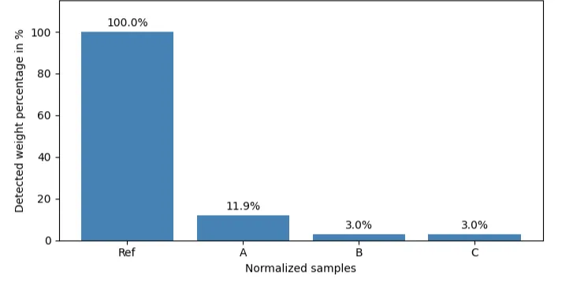

Design. Every project starts with an idea. This idea is then refined into a concise plan.
Build. The plan is then applied. DNA constructs are assembled.
Design. The design is put to the test. Does it work? How does it perform?
Learn. The takeaways from this cycle are gathered. Improvements are made. The cycle begins again.
Cycle 1
Cycle 2
Cycle 3
Cycle 4
Our team successfully engineered the bacterium Corynebacterium glutamicum to produce oxalic acid, a valuable chemical used in everything from cleaning products to pharmaceuticals. We used C. glutamicum because it’s a proven industrial workhorse, and we gave it a new ability by borrowing a gene from the fungus Aspergillus niger [Ray et al, 2022].
The key was the oxaloacetate hydrolase (OAH) gene. In theory, implementing OAH in C. glutamicum’s metabolism should lead to the conversion of oxaloacetate to oxalate and acetate:

For optimal translation conditions, we chose a codon-optimized variant of oahA. Additionally, we added a His6Tag a the c-terminus so that OAH-purification is possible. As expression systems, we decided to test the IPTG-inducible expression vector pEKEx2, which is well-established at our institution as well as ist derivative pPBEx2. The latter was designed by Bakkes et al. (Jülich, Germany) and should present with lower leakiness.
Codon optimized oahA was ordered from Gigabases, a DNA synthesis company from Switzerland. The gene of interest was subcloned into linearized pEKEx2 and pPBEx2 by amplifying it via Q5-PCR and using the NEBuilder DNA Assembly protocol for assembly. After successfully creating pEKEx2_oahA and pPBEx2_oahA, both vectors were transformed into E. coli and subsequently electroporated into the target organism C. glutamicum.
To test the production capability of our new mutants as well as their viability, we conducted a first cultivation with both mutants and the wildtype as control. Oxalate production was induced by adding 2.5 mM IPTG after 3 h of cultivation. Two mutant cultures were not induced to test for leakiness. The extracellular oxalate level was measured after 6 hours using a commercially available enzymatic assay and biomass formation was tracked by measuring optical density (OD600).
The results show that our mutants indeed produce oxalic acid and their growth rate is only slightly decreased in comparison to the wildtype.

| culture | µmax |
|---|---|
| WT | 0.43 |
| pEKEx2 | 0.42 |
| pEKEx2+ | 0.37 |
| pPBEx2 | 0.40 |
| pPBEx2 | 0.38 |

| culture | Oxalate[µM] |
|---|---|
| C.g. Wildtype | 74 |
| C.g. pPBEx2_oahA induced | 360 |
We also measured oxalate concentration kinetics throughout the whole cultivation (data not shown), however since the results showed extremely high variance they were not reliable.
To quantify oxalate production and further evaluate growth characteristics in larger scale, we tested C.g. pPBEx2_oahA in a 1 L stirred tank reactor system. The results validated our previous data and confirms that the growth rate is decreased by introducing the pPBEx2_oahA plasmid.

Oxalate production was again tested using the same enzymatic kit as before. The results once again showed extremely high variance. The only take-away is that the plasmid-containing induced cultures showed elevated oxalate levels while the wildtype cultures only showed traces.
This first cycle provided us with a proof of concept. We learned that the plasmid burden on the organism is reasonable and oxalate production is possible with our approach. The unreliable oxalate data remain a problem which we will try to solve by testing different quantification methods including HPLC and a chemical precipitation assay (see cycle: Oxalate Assay).
To further optimize oxalate production, we decided to try genome integration of the oahA gene for a more stable production without having to rely on antibiotics. Apart from that, different induction times and inducer concentrations should be tested to find the optimal conditions.
Oxalate ions can form soluble metal oxalato complexes with PGMs like platinum, predominately as [Pt(C₂O₄)₂]²⁻ [Krishnamurty, 1961].
To make our own claims about PGM yields from leaching with oxalic acid, we designed a simple experimental set-up with varying parameters to determine the optimal conditions. For this, we used spent catalysts ground-up into PGM dust (courtesy of Mairec) that was mixed with oxalic acid and heated up over an oil bath. The resulting solution with the metal oxalato complexes was filtered and distilled. The samples were analyzed via inductively coupled plasma optical emission spectroscopy (ICP-OES).
The experiment was set up as follows: The PGM dust and the oxalic acid were deposited into a three-neck round-bottom flask placed in an oil bath and solved in water. The leaching process takes several hours, during which the oxalate ions form soluble complexes with the PGMs.


Then, the solution is filtered to separate the complexes solved in the solution from the remaining unsolved PGM dust components. This time is also used to heat up the oil bath to >100°C to evaporate the water, leaving behind the desired metal oxalato complexes. This is done with the help of a reflux cooler. The dry sample was then analyzed via ICP-OES.
The ICP-OES analysis offered the following results.

In this simple set-up, it seems that no other PGMs than platinum were leached by the oxalic acid. The leaching rate for Pt is relatively low compared to rates acquired from leaching cycles performed with A. niger [37% Malekian, 2019].
These first rudimentary cycles confirmed that we could leach platinum out of spent catalysts with oxalic acid. Yet, it also proved that both the analysis of our samples as well as the complexity of the experimental set-up to be more complicated than previously anticipated.
We drew the following conclusions:
1. Ray, D. et al. (2022). The soil bacterium, Corynebacterium glutamicum, from biosynthesis of value-added products to bioremediation: A master of many trades. Environmental Research, 213, 113622. URL: https://doi.org/10.1016/j.envres.2022.113622
2. Bakkes, P. J. et al. (2020). Improved pEKEx2-derived expression vectors for tightly controlled production of recombinant proteins in Corynebacterium glutamicum. Plasmid, 112, 102540. URL: https://doi.org/10.1016/j.plasmid.2020.102540
3. Lange, J. et al. (2018). Harnessing novel chromosomal integration loci to utilize an organosolv-derived hemicellulose fraction for isobutanol production with engineered Corynebacterium glutamicum. Microb Biotechnol., 11(1), 257-263. URL: https://doi.org/10.1111/1751-7915.12879
4. Bell, L. (2001). The Lac repressor: a second generation of structural and functional studies. Current Opinion in Structural Biology, 11, 1, 19-25. URL: https://doi.org/10.1016/S0959-440X(00)00180-9
5. Krishnamurty, K. V. et al. (1961). The Chemistry of the Metal Oxalato Complexes. Chem. Rev., 61, 213-246. URL: https://doi.org/10.1021/cr60211a001
6. Malekian, H. et al. (2019). Investigation of platinum recovery from a spent refinery catalyst with a hybrid of oxalic acid produced by Aspergillus niger and mineral acids. Waste Manag, 85, 264–271. URL: https://doi.org/10.1016/j.wasman.2018.12.045